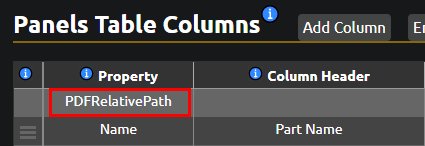
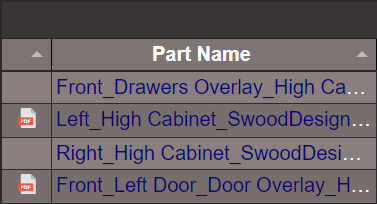

Saving Drawings to PDF
Overview
Swood can automatically save the associated SolidWorks drawings of models as PDFs. This process is enabled by adding specific custom properties to the model and then running the Swood Report.
What Is a SolidWorks Associated Drawing?
Only SolidWorks associated drawings can be automatically saved as PDFs. To qualify as an associated drawing, a SolidWorks drawing must meet the following criteria:
- The drawing file name must match the model file name.
- The drawing must be saved in the same location as the model.
Activating Custom Properties
By default, the option to save drawings as PDFs is disabled. Since generating PDFs can take extra time and might not be needed initially, users must add specific custom properties to the file where the report will be run to enable this feature.
Add any of the following properties to enable the corresponding PDF generation:
- PDFProject = Yes Saves the project's drawings.
- PDFFrames = Yes Saves all frame drawings.
- PDFPanels = Yes Saves all panel drawings.
- PDFHardware = Yes Saves all hardware drawings.
Where Are the PDFs Saved?
By default, PDFs are saved in the following locations, depending on the model type:
- Project: <REPORTPATH>\PDF
- Frames: <REPORTPATH>\PDF\Frames
- Panels: <REPORTPATH>\PDF\Panels
- Hardware: <REPORTPATH>\PDF\Hardware
In theSwood Report Pro, you can view the saved PDF drawings by clicking the PDF icons.
To display the PDF icons, use the Swood Editor to add a column with the property PDFRelativePath, as shown in the example below:
This property can be added to the Frames, Panels, and Hardware tables.

If the report contains saved PDFs, it will display a column with the corresponding icons:
